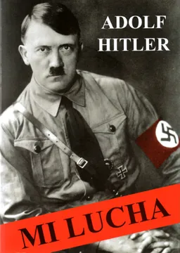

Formato: Libro físico
Autor: Adolf Hitler
Editorial: Real Del Catorce
Categoría: Historia
Año: 2018
Idioma: Español
N°páginas: 430
Encuadernación: Tapa blanda
Precio de venta: $18.930
DESCRIPCIÓN
Mi lucha es el compendio de todos los delirios de la mente de Hitler. El libro perfila las ideas principales que el régimen alemán llevaría a término durante la Segunda Guerra Mundial. Especialmente prominente es el violento antisemitismo de Hitler y sus socios, perfilando entre otros pensamientos los protocolos de los sabios de Sion. Por ejemplo, denunciaba que el esperanto era parte de un complot judío, y argumenta sobre la vieja idea nacionalista alemana de Drang nach Osten: la necesidad de ganar Lebensraum hacia el este, especialmente en Rusia. Esta obra puede considerarse como uno de los libros más relevantes de la historia por haber sido totalmente ignorado, puesto que Hitler anunció su disposición a desencadenar un conflicto bélico y una persecución racial basado en muy personales convicciones, resumió sus intenciones en su Mein Kampf 13 años antes de iniciar la guerra, 7 antes de acceder al poder, y estando la definición del futuro régimen Nazi al alcance del pueblo alemán y los líderes mundiales.